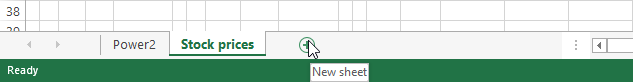

In this lab you will learn the basics of using a computer spreadsheet program, specifically Microsoft Excel. You will learn:
how to layout and format a spreadsheet
when and how to use relative or absolute references
how to get the software to do calculations for you
how to generate charts to visualize your data
Task 1: Powers of 2, Powers of 10
Introduction
Computer memory is measured in bytes, which is the amount of memory
historically used to store a single character. Because computers use a
binary number system (with only two digits: 1 and 0),
larger amounts of memory are often measured internally by power-of-2 multiples
of bytes. For example, the NTFS
filesystem usually stores data in chunks of
4 "kilobytes" (4 × 210 bytes), and modern
RAM modules
are usually measured in multiples of 230 ("giga") bytes.
On the other hand, people usually measure things in the real world using
SI prefixes,
which are based on powers of 10. For example, we measure distance using
kilometers (103 meters) and power using gigawatts (109
watts).
Confusingly, the prefix system for powers of 2 used in
computing uses the same names as those in SI, even though they refer
to slightly different numbers! As you can see in the figure below, the
base-2 and base-10 prefixes are fairly close approximations of one another,
but they diverge more and more as the prefixes get larger.
Prefix
Computing
SI
Ratio
power
amount
power
amount
kilo
210
1024
103
1000
1.024
mega
220
1048576
106
1000000
1.049
giga
230
1073741824
109
1000000000
1.074
Comparison of prefixes in computing and SI
If that weren't confusing enough, CPU speeds and hard-drive sizes are
usually measured and marketed using SI prefixes, while other computer
components continue to be marketed using base-2 prefixes!
In this task, you will be using Excel to compute powers of 2 and 10 up
to the 40th prefix value and create a graph of their divergence.
Fill column A with the numbers 0 to 40.
Using the Fill Handle
Selected cells will have a small box in the bottom-right corner of the selection area. If you click and drag this into adjacent cells, Excel will intelligently generate data based on the selected content into the new cells.
For example, if the selected cells contain the first few numbers of a simple pattern (such as three cells with 0, 1, and 2), Excel will generate more numbers that follow the sequence.
If the selected cell contains a formula, that formula will be filled into the new cells, and any relative references will be automatically updated (more on references below).
Insert a formula into the first row of column B that computes 2 raised to the power of 10 times the adjacent value in column A (210A), then fill it down to the remaining 39 rows.
References
To use the value of a cell inside another cells formula, you must use a reference. To create one, type the cell's index into the formula (ex: A1), or just click on the cell to automatically insert it.
By default, this will be a relative reference. This means that when filling this formula down into other cells using the fill handle, the references will automatically change themselves relative to each cell being filled. For example, if a formula in cell A1 is referencing cell C1, filling that formula down the column will update each cell's reference to target the cell in its own row, A2 will reference C2, and A3 will reference C3.
If this behaviour is undesired, an absolute reference is required. In the previous example, if the reference in the formula was changed to C$1, each newly filled cell (A2,A3,etc) will still reference cell C1. The $ symbol before the row index tells Excel to always reference a cell in row 1. It can also be added before the column index ($C1) to only reference that column, or added to both ($C$1) to only ever reference that specific cell.
The formulas =C2, =H$2, =$M$2 were applied to each of the blue cells, then filled to the grey cells. Take note that the first two examples are still able to reference the negative columns, whereas the third always references M2.
Insert a formula in column C that computes 10 raised to a power of 3 times the value in column A (103A).
Insert a formula in column D that computes the ratio of each value in column B to the value in column C (210A:103A).
Create a bar chart that shows the growth of the ratio (column D). Title it .
Generating Charts
Select the data you wish to generate a into a chart. Column headings can be selected too, and Excel will automatically add them as labels to the chart.
Pick a chart type in the Charts section of the Insert ribbon. Clicking Recommended Charts will open a window with a list of charts Excel thinks will be useful, as well as a tab to view all possible charts.
After the chart has been generated, you can double-click elements to modify them.
Rename this sheet Power2Worksheets

Each Excel file, known as a Workbook, can contain multiple Worksheets. A worksheet is simply an organization tool for separating your data into different sections. Worksheets are accessed using the tabs at the very bottom of the Excel window. Click the plus button to create a new sheet, and right-click the sheet's name to rename or delete it.
Task 2: Importing and Sorting Data
Introduction
It's all well and good to create synthetic data to play with, but in the
real world, one usually works with real numbers. In this section, you will
experiment with data from Yahoo Finance,
which provides a wealth of financial information in convenient formats.
Your task is to generate a table that displays prices and
relative performance for two stocks for the past two or three months.
You can choose any two stocks you like; interesting pairs might be selected
from among Amazon, EBay, Google, Yahoo, IBM, Oracle, Ford, GM, etc.
Search for a stock by entering a company name in the large text field
at the top of the page and choosing the result you want from the
results drop-down.
Select Historical prices in the left-hand navigation bar.
Choose a range of dates that you want, covering 2 to 3 months, and click the Get Prices button to regenerate the data table.
Go to the bottom of the page and select Download To Spreadsheet.
Repeat steps 2-5 for a second stock, using the same range of dates.
Open both downloaded files in new Excel files.
In each downloaded stock file, delete all columns except Date and Adj. Close
Create a new a worksheet in your Excel file from Task 1
and rename it Stock prices.
Copy and paste the two stock data sequences side-by-side into the Stock prices worksheet.
Remove the extra date column (which should have duplicate information). Your worksheet should now have three columns. The left column should contain a date, and the following two columns should contain the stock prices on each day for each company.
Change the headings of the Adj. Close columns to the corresponding names of your stock companies.
Change the date format to something more readable (e.g. December 31, 1999)
Cell Formatting
Right-clicking one or more cells and selecting Format Cells opens the Format Cells window. This window contains various options for changing the look of the cell and its contents. The Number tab allows you to choose what type of data the cell contains and how it should be displayed. For example, selecting Currency will preface numbers with a $ symbol, add commas and limit decimal places.
Format the numbers in columns B and C to use comma separators.
Resize columns if needed so that all the information is visible.
Double-check that all rows in your stocks worksheet contain prices for both companies,
fill in any missing values with the price from the following day.
Sort the data by date from oldest to newest.
Sorting spreadsheets
Select all columns in your dataset, including any headers. You can do this quickly by dragging over the column index letters.
Click Sort in the Data ribbon.
A window will appear with dropdowns populated from your data.
Select the column to Sort by, then the Order (ignore Sort On).
For each stock, create a column with a formula that divides each day's value by the starting value (Bcurrent ÷ Bfirst). This column shows change in value for each stock.
Reminder: Absolute References
Absolute references are made by adding a $ symbol in front of the letter and/or number. For example, to absolutely reference the first row in column A, use $A$1 as your reference key.
Use the chart wizard to create a graph comparing the two stock's change in value over time (the two new columns you generated in the last step). Make it look approximately like the one below but with a meaningful title and proper labels.
Example chart
Review
Create a new worksheet called Review and write some notes describing what new things you have learned in this lab. Also mention any steps or concepts you are still finding difficult to understand and would like to receive feedback on.
Deliverables
A single Excel document containing three worksheets (Power2, Stock prices and Review).
Power2 Worksheet:
powers of 2 from 20 to 2400, in steps of 10
powers of 10 from 100 to 10120, in steps of 3
the ratio of each "equivalent" power of 2 and 10
a chart of the ratios
Stock prices Worksheet:
a date column
two stock value columns
two columns computing the ratio of each row's stock value to the initial value for that stock
a graph comparing the change in stock for both companies.
Here are some extra steps to consider to help your Overall Assessment
Use an Excel function to calculate the formulas in task 1.
Customize the style of your graphs.
Use fill colors, borders, and font sizes to pretty up your tables of data.
Save your document as Stocks_Firstname_Lastname.xlsx and submit it to the dropbox on D2L.
NOTE: This assignment is to be done individually. You can
help one another with problems and questions, but in the end everyone must
do their own assignment.
Criteria
Marks
Power2 Worksheet
Data
2
Chart
1
Stock Prices Worksheet
Data
3
Chart
2
Overall Assessment
Demonstrates a solid understanding of the material